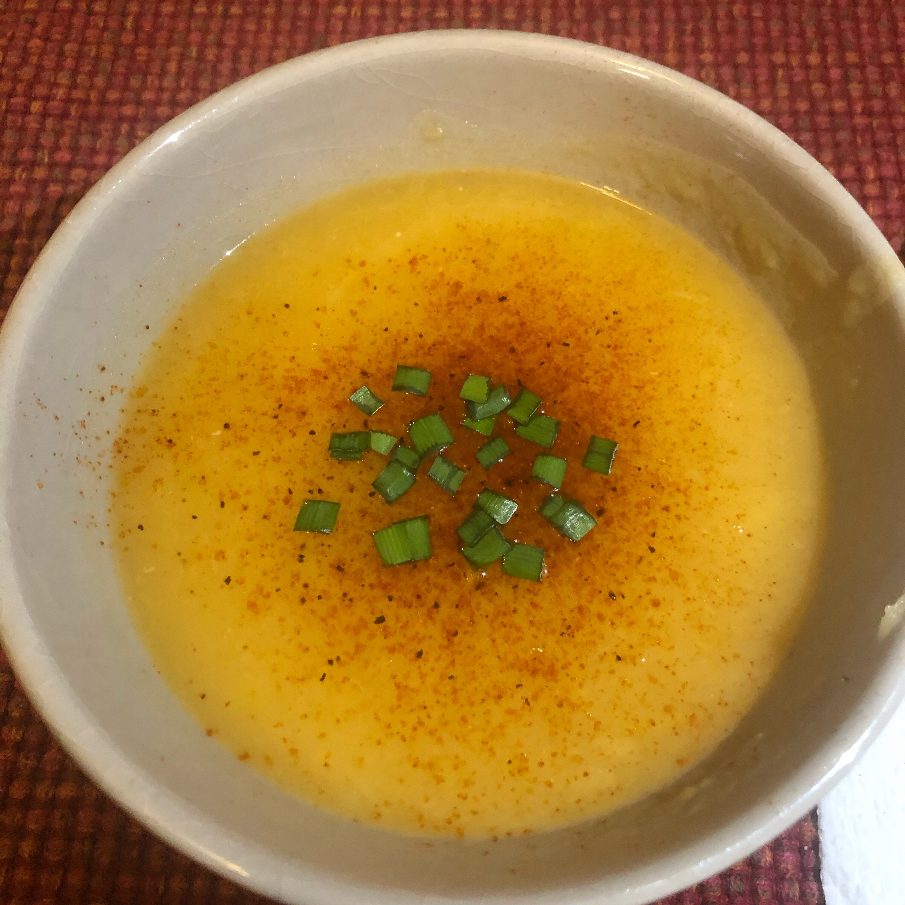

Vegetarian Potato-Leek Soup

Healthy potato-leek soup for vegetarians.
Per Serving: 176 calories; protein 3.1g; carbohydrates 25.5g; fat 7.2g; sodium 315.6mg. Full Nutrition
Ingredients
- ¼ cup olive oil, divided
- 2 leeks, chopped
- 1 (32 fluid ounce) container vegetable broth
- 1 ¾ cups water
- 2 pounds potatoes, cut into cubes
- ⅜ teaspoon cayenne pepper
- ¼ teaspoon salt
Steps
- Heat 2 tablespoons olive oil in a stock pot over medium heat. Cook and stir leeks in hot oil until completely softened, adding remaining olive oil in small amounts as you cook the leeks, about 10 minutes.
- Pour vegetable broth and water into the pot; add potatoes. Bring mixture to a boil, reduce heat to medium-low, and cook at a simmer until the potatoes are completely tender, about 25 minutes.
- Pour potato mixture into a blender no more than half full. Cover and hold lid down; pulse a few times before leaving on to blend. Puree in batches until smooth. Stir cayenne pepper and salt into the soup.